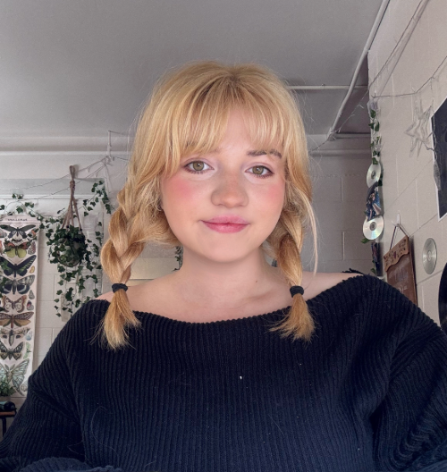

I am currently a third year student studying English and Psychology at the University of Massachusetts Amherst! Additionally, I am pursuing a certificate in Professional Writing and Technical Communication.
I have written multiple professional pieces as part of my work for the PWTC track. Some of my highlights have been a feasibility study and a 25-page grant proposal. With that being said, I have a passion for writing professional documents and am aiming to explore my passion for user experience in the coming years.
I also study psychology as a second major and love to learn about the human mind and nature. I love working with people, and studying the human mind enhances my ability to effectively work with and understand others.
Aside from the academics, I love yoga, relaxing the mind, and working the body. Arts and crafts is another passion of mine. From crocheting to hot gluing, crafting my way through creative chaos and finding balance one yoga pose at a time is what I am all about.
Check out my LinkedIn!Let's be in contact! Reach me via email!
